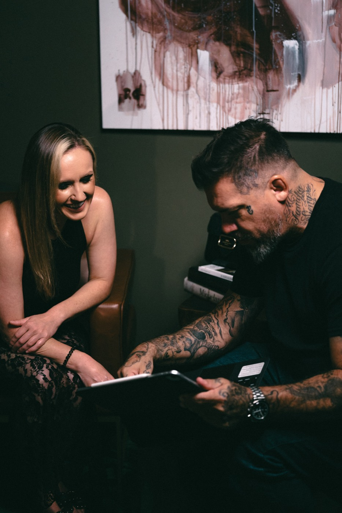
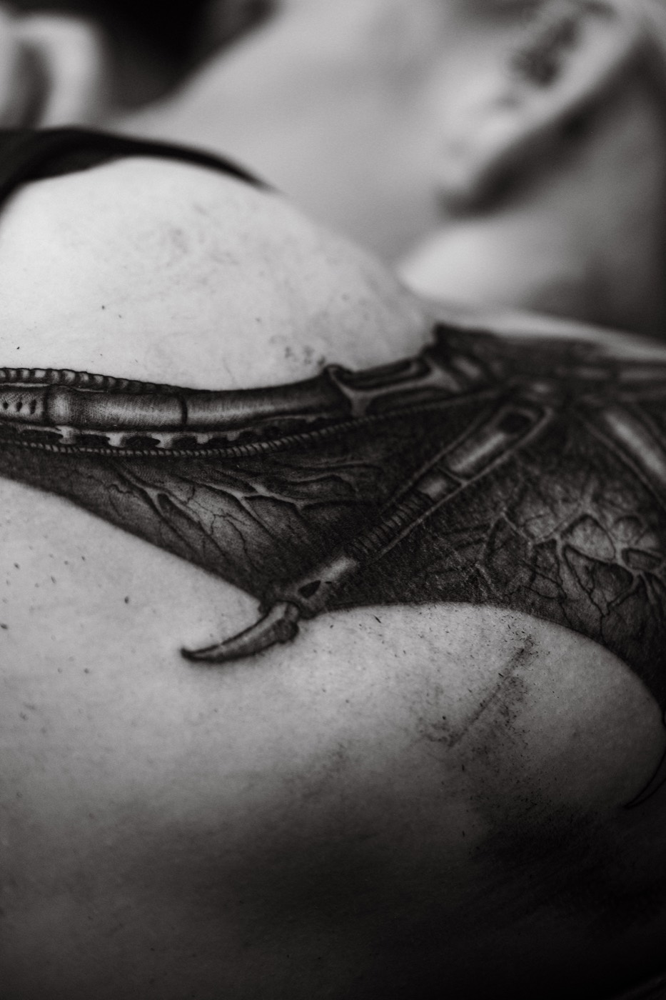
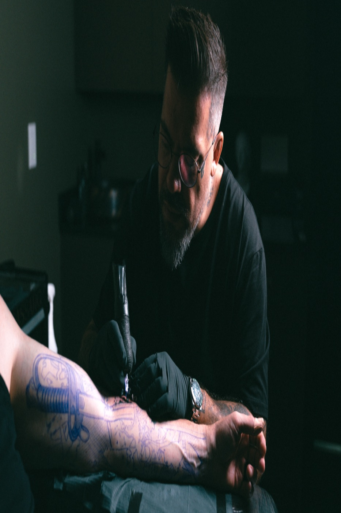
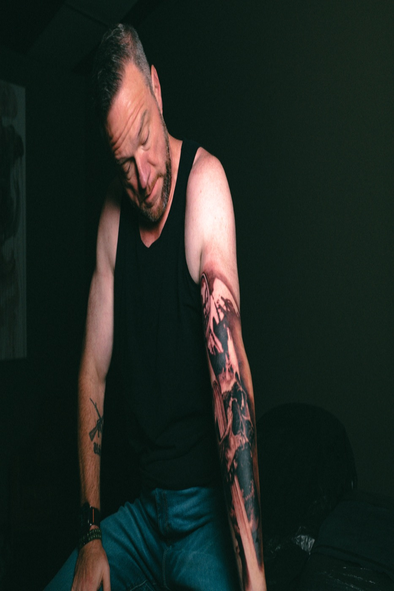

The Archive
This is not a collection of tattoos. It is a record of trust, time and artistic collaboration. Some projects naturally become part of my journey, not because they were planned as something special, but because the relationship, the process and the final work carried a presence that deserved to be kept. If a piece enters the archive, it earned its place.




Photography · Gerusa Younes
Every piece in the archive began as a conversation.
Tell me what you have in mind. I read every inquiry personally.
Start a commission